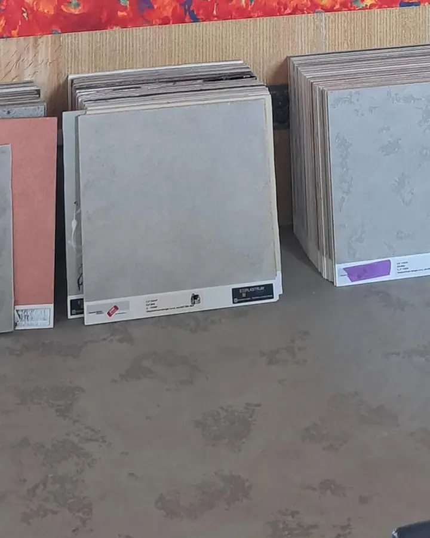

Pevné, uzavřené lité podlahy pro garáže, dílny, sklady a provozy. Navrhujeme je podle zatížení a stavu podkladu, aby odpovídaly skutečnému provozu.
Epoxidové povrchy se nehodí všude. Na slunci mohou žloutnout, proto se do exteriéru obvykle nenavrhují. Podívejte se na srovnání s polyuretanem.

Obecné vlastnosti skupiny materiálů. Samotné označení „epoxid“ ještě neříká, jakou odolnost můžete očekávat – rozhoduje konkrétní systém.
Nátěr, nebo litá stěrka? Tenkovrstvý epoxidový nátěr více kopíruje strukturu betonu, litá stěrka vytváří souvislejší nášlapnou vrstvu. Varianta se vybírá podle podkladu, provozu a požadovaného výsledku.
Konkrétní postup se přizpůsobuje zvolenému systému. Schéma ukazuje obecné kroky. U starší garáže si zvláštní pozornost zaslouží mastná místa: olej může být nasáklý hlouběji v betonu, takže samotné umytí nemusí stačit.
Kontroluje se pevnost, soudržnost, vlhkost a stav betonu. Řeší se také, jak budete prostor využívat.
Broušením nebo jiným vhodným postupem se odstraní nesoudržné vrstvy a povrch se připraví pro spojení s dalšími materiály. Následuje důkladné odstranění prachu.
Opraví se výtluky, podle charakteru také trhliny. Dilatační spáry se musí správně zachovat a ošetřit.
Na připravený podklad navazuje penetrace a vlastní epoxidová skladba, případně protiskluzová úprava posypem.
Povrch se uzavře a vytvrzuje. Dodržují se předepsané technologické přestávky, termín zatížení stanoví realizační firma podle systému a teploty.
Schematický řez skladbou. Tloušťky vrstev jsou pro přehlednost zvětšené a konkrétní skladba se liší podle zvoleného systému.
Uzavřený povrch snadno čistíte a chrání beton před běžným znečištěním z provozu. Chemická odolnost ale není neomezená. Záleží na konkrétní látce, koncentraci, teplotě a době působení. Pokud v prostoru používáte odmašťovače, rozpouštědla nebo brzdovou kapalinu, ověříme jejich působení pro zvolený systém.
Často ano, ale příprava rozhoduje. Olej může být nasáklý hlouběji v betonu, proto samotné umytí nemusí stačit. Stav podkladu posoudíme před návrhem skladby.
Může být, hladký povrch není automaticky protiskluzný. Do garáží a na místa s vodou proto stojí za zvážení strukturované provedení, například s posypem křemičitým pískem.
Epoxidové pryskyřice nejsou odolné proti UV záření, bez ochranné vrstvy se může povrch postupně měnit. Proto se do exteriéru nebo prosluněných prostor obvykle volí jiný, UV stabilní systém. Podívejte se na polyuretanové podlahy.
Pochozí povrch ještě nemusí být připravený na zatížení autem. Termín se řídí použitým systémem a podmínkami při vytvrzování, zejména teplotou. Přesný čas vám sdělíme podle konkrétní skladby.
Popište nám prostor a jak ho používáte. Ozveme se vám a domluvíme další postup.
Raději volat? +420 602 596 664
Po telefonické domluvě, pondělí až pátek
Ozveme se vám na zvolený kontakt. Pokud potřebujete mluvit hned, zavolejte na +420 602 596 664.
Nejste si jistí výběrem? Srovnání epoxidu a polyuretanu a rady, kde se co hodí.